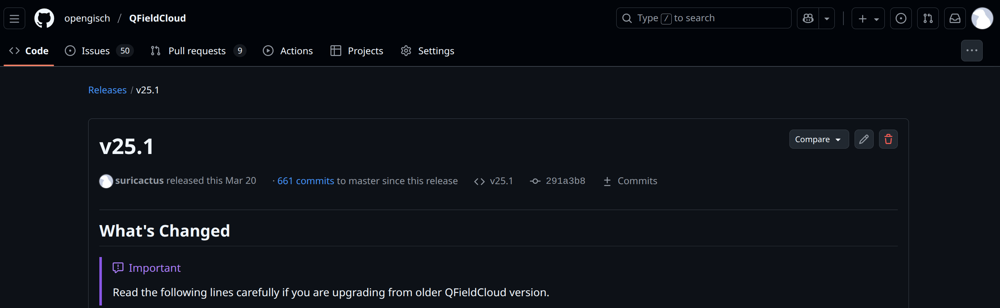

State of

What is QFieldCloud?
Your tool for seamless fieldwork!
☁️ Centralized project, data and settings management.
🤝 Collaboration - users, organizations, teams.
✏️ Data versioning.
🧑💻 API integrations.

Use app.qfield.cloud
the OPENGIS.ch hosted solution
QFieldCloud is hosted in Switzerland!

Use dedicated/on-premises QFieldCloud
your own QFieldCloud
QFieldCloud is hosted in your organization!
2025
in review

800 code changes
35 released versions

9000
unique active monthly users
What’s new in 2025?
A lot!
🆕
🆕
🆕
🆕
🆕
🆕
New features for all subscriptions
- More storage with the same expense - 3 times more storage, same monthly invoice.
- Support virtual layers in community plan - more functionality, more flexibility.
New products
- Dedicated installations - your organization, our dedicated server, our expertise, just for you.
- On-premises operations agreement - your organization, your server, our expertise, just for you.
File storage
We implemented a new file storage backend, that was yet to be the largest single change of QFieldCloud ever.
- Speed - make file handling equally fast for both small and large projects.
- Resticted project files - limit who can change sensitive files.
- Resumable large file downloads - make downloading on unstable networks much more effient.
- Allow uploads of files up to 20GB - because spatial data is heavy.
Projects
- Shared datasets - upload your basemaps once, use it within all projects in your organization.
- Attachments on demand - don’t overload your device with sometimes unnecessary attachments.
Secrets
- Add organization level secrets - having to declare the same secrets for each individual project was tiring.
- Assign secrets to individual users - best practices matter!
Single sign-on (SSO) support
- Sign in with Google on app.qfield.cloud - very, very soon.
- Dedicated/on-premises instances are ready to support your OIDC provider.
On-premises and custom apps on top of QFieldCloud
- Multiple storage backends - do not limit yourself to just Object Storage (S3).
- Store attachments on separate storage - store attachments directly on your WebDAV server.
- Adding custom jobs - write your own workflow for your own needs on top of QFieldCloud.
- Translatable user interface - QFieldCloud speaks your language.
Upcoming in 2026?
Billing
🎁 New billing plans.
🗓️ Yearly payment.
💳 More payment methods than just cards.
🛒 Easier access to subscription and invoices for you and all your organizations.
👀 More transparent and better communicated billing usage information.
File handling
- Resumable large file uploads.
- File upload and deletion from the Web UI.
Projects
- Cloning/duplicating projects - introducing the concept of template projects.
- Download all project files as a ZIP archive.
Introducing a new QGIS authentication secret type
More SSO providers coming to app.qfield.cloud
UI improvements
- Refresh on the Web UI.
- Adding more than one organization member/project collaborator at a time.
- Highlighting shared datasets and template projects.
- Continuous improvement of QFieldSync UI.
- More QFieldCloud functionality available in QField.
And more, thanks to you,
our users and supporters!
Ok, nice words, how to use it?
Do you already use QField?
Integrate QFieldCloud in your workflow
🥳 Use app.qfield.cloud - go and sign up at app.qfield.cloud.
💪 Upgrade your app.qfield.cloud account - unlock all superpowers of app.qfield.cloud.
🦾 Request a dedicated/on-premises QFieldCloud - drop us an email at sales@qfield.cloud.
Integrate QFieldCloud in your workflow (techny)
💻 Use the CLI - pip install qfieldlcoud-sdk and use qfieldcloud-cli in your shell.
🐍 Use the SDK - pip install qfieldcloud-sdk and import qfieldcloud_sdk in Python.
😎 Stable APIs - integrate with QFieldCloud using the RESTful API documented with OpenAPI/Swagger.
☁️ Extend QFieldCloud - build an app on top of QFieldCloud.
Yeah, I am almost convinced, but…
- I have no idea if QFieldCloud is going to work for us…
- I am almost convinced, but I need a clarification about…
- I am fully convinced QFieldCloud is great, but we will need some training…
- Where do we even get started with all these features…
- If only it were possible to customize this for us by adding…
- It looks nice, but I’m missing the one feature that is preventing us from using it…
- We have a much more complex system, and we need more information on how to integrate it…